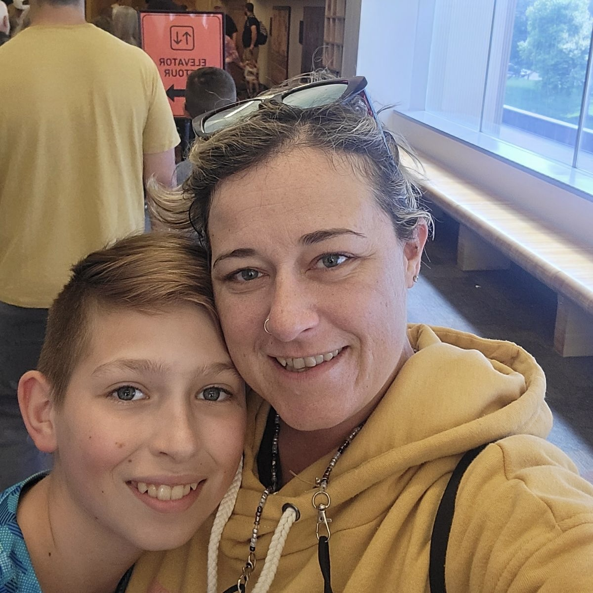

Welcome to Influential Figure
Scroll down to explore more
Scroll down to explore more
My influential figure is my mother. She has taken care of me my whole life and will always love me. An example of an event of my mom being a positive influence is when I had fallen over on the driveway when I was about 7, with bits of scooter handle foam embedded into the skin right next to my eye. Although it hurt, and when I got stitches it was highly uncomfortable, she always stuck with me and kept my head held up high. My mom positively affects me in so many more ways than just one, no matter the environment and situation.
Here are some of the many photos of me and my influential figure, mom.
At times our relation ship is rough, and we can sometimes have opposing opinions and thoughts, my mom is always--and always will be--mom.